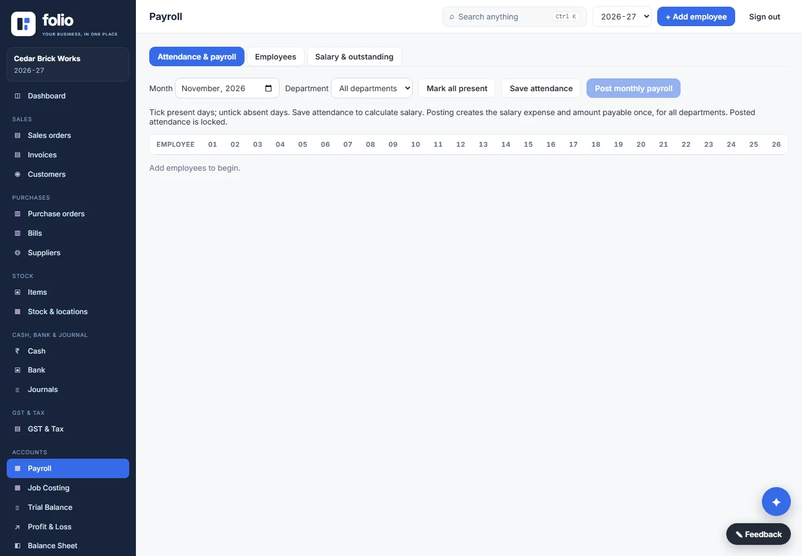
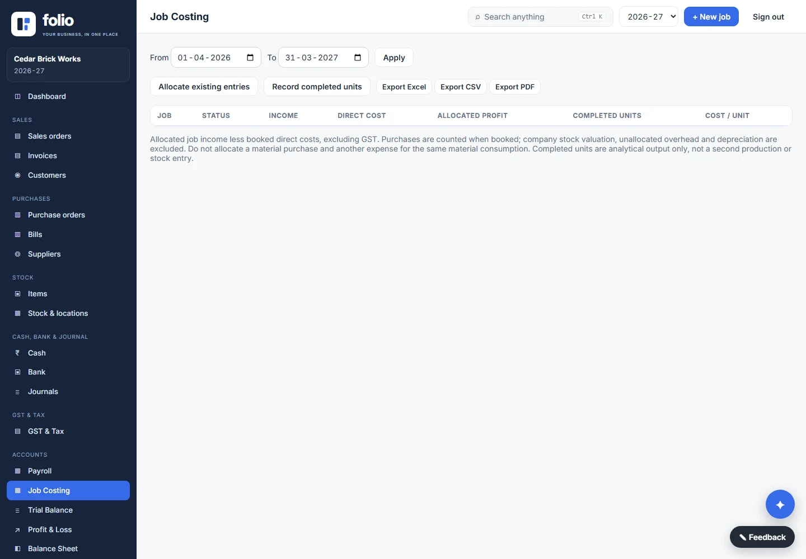
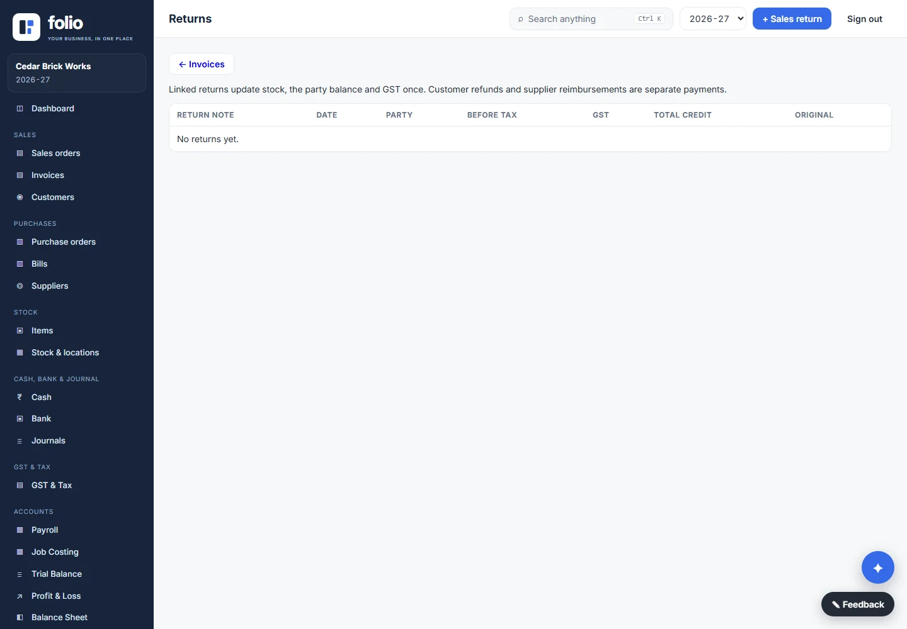
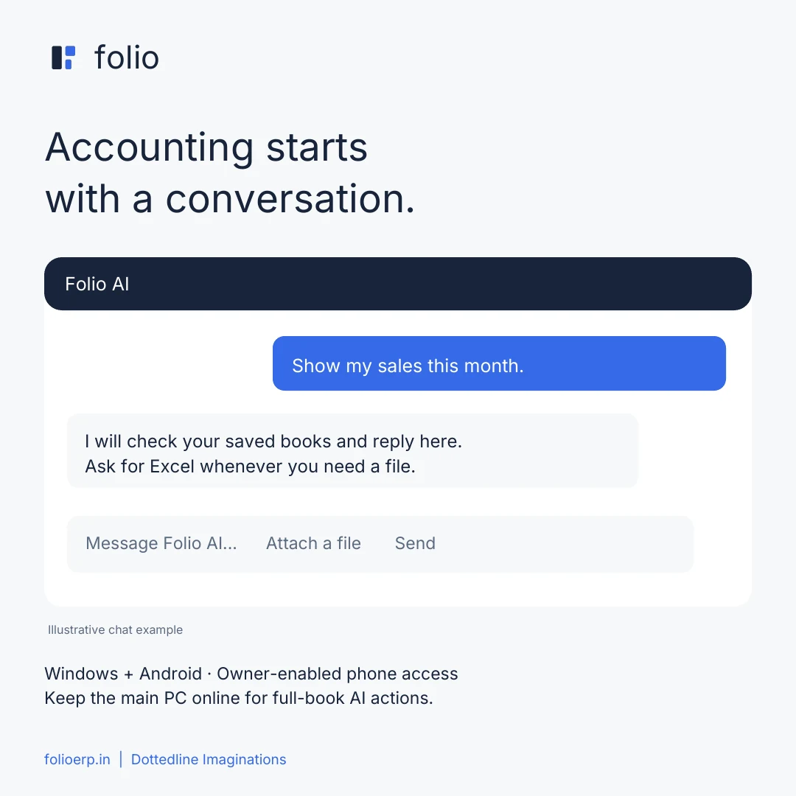
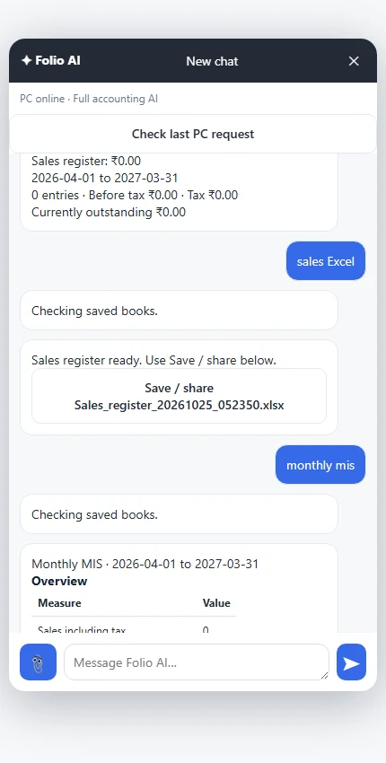
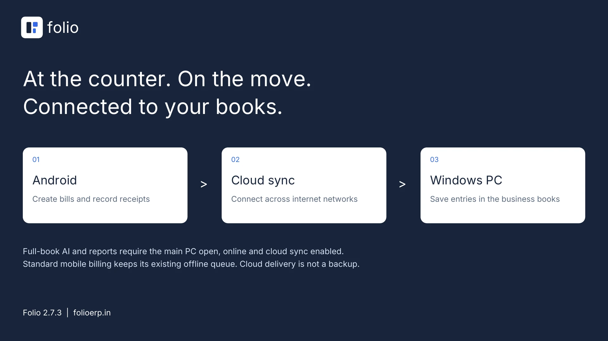

Know where you stand
Sales, trial balance, profit and loss, balance sheet and monthly MIS. See figures in chat; ask for Excel when you need a file.
FOLIO · WINDOWS + ANDROID
Billing, accounts, stock and AI.
Run your books on Windows and take billing with you on Android.
Free Windows software. Request access for Android cloud sync and Folio AI. Current launch access is free until the offer changes.
Every number
tells a story.
A PLACE FOR EVERY DETAIL
Simple daily work. Structured accounts.
Choose a view to see Folio in action.
Create bills, add an item while invoicing, and make your A4 print layout your own. Keep payments and balances close at hand.
Read the illustrated user manual ↗Sales, trial balance, profit and loss, balance sheet and monthly MIS. See figures in chat; ask for Excel when you need a file.
Manage products, materials, prices and GST. Record production, rejects and material usage with recipe support.
Preview and validate supported spreadsheets and data exports before importing them.
SEE THE ACTUAL SOFTWARE
A recorded walkthrough in a fictional demo company. See invoice creation, bank accounts, payroll, job costing and reports.
Silent screen demonstration with English captions. Demonstration records only. Follow the illustrated manual ↗
MORE OF YOUR DAILY WORK, TOGETHER

Monthly salary and daily wages, departments, effective-month salary changes, salary payable and bank-payment exports. Record completed payments; Folio does not send money.

Allocate existing income and expense vouchers to jobs. Record completed output and review job results and cost per unit.

Record returns against the original transaction and review their accounting, stock and GST effects.
Maintain items, barcode details, storage locations and supported stock movements. Prepare sales and purchase orders.
Keep multiple bank and cash ledgers. Store account details and IFSC alongside the account for everyday reference.
Review sales and purchase tax records, available GSTR views and 2B matching. Review exports before filing; automatic portal filing is not included.
These screens are from the current 2.9-series Windows source. Older installed builds may not include every screen. Android is the billing companion, not a copy of every desktop module.
MEET FOLIO AI
A floating assistant that works alongside your daily accounting. Ask a question, attach a document or describe an entry.
Ask naturally
“What are my sales this month?” returns figures in chat. “Export that in Excel” gives you a file.
Turn documents into entries
Attach PDFs, photos or supported spreadsheets. Folio asks for missing or ambiguous details before saving.
Work in the real books
Create or edit supported invoices, purchases, receipts, payments, journals and master records. Say “preview” to review first.
AI uses the configured Gemini service and its limits. Review document readings and saved entries. On Android, full-book AI requires activated sync, owner-enabled access and an online PC.

FOLIO IN YOUR HAND
Bill from your Android phone and record the money received. An activated cloud connection delivers entries to your PC across different internet networks.
The Android companion requires activated app-to-PC cloud sync. Keep the main PC open, online and sync enabled for delivery and full-book AI. Offline billing entries wait until they can sync.

CLOUD SYNC FOR YOUR CONNECTED WORKSPACE
Android → cloud connection → your Windows PC.
Your existing books stay on the owning PC.

Request your business activation for Android sync and AI. Launch access is currently free until the offer changes; the Windows software remains free.
Use the PC's Mobile sync screen to connect your Android app. Enable full accounting AI only for trusted phone users.
Leave Folio open and online on the main PC. Cloud delivery is not a backup: keep separate copies of your books.
A THOUGHTFUL MOVE TO FOLIO
Import supported Excel, CSV, TSV, JSON, XML and SQLite records with column mapping and validation. Keep a backup and review your data before it enters the books.
Proprietary backups and complex exports may need a separate converter. Available imports depend on the record type.
START WITH FOLIO
WINDOWS
Local billing, accounting, stock and reporting in your Windows workspace.
Get Windows software ↓ANDROID + CLOUD + AI
Free until the launch offer changes. An activation key is required. Contact us to connect your business; provider usage limits apply.
Request access ↗GETTING STARTED
Read the illustrated steps for invoices, accounts, payroll, job costing, Android pairing and backups.
Read the manual ↗YOUR NEXT CHAPTER STARTS HERE
Download Folio for Windows or Android. Request activation for cloud sync and AI.
Free Windows software for billing, stock, accounts, AI and reports. Request activation for Android billing, cloud sync and AI.
Download Windows installer Version 2.9.1 · EXE · 45.5 MB · Direct downloadAndroid app for sales and receipts. Activated cloud sync is required to connect the app to your Folio PC.
Download Android APK Version 2.9.0 · APK · 0.8 MB · Direct downloadThe Windows software is free. AI and Android cloud sync need activation. Launch access is currently free until the offer changes. Email us for a key; downloading the APK alone does not activate the service.
No. Cloud sync works across different internet networks. Keep the main PC open, online and sync enabled to receive entries and run full-book AI actions or reports.
After setup and catalogue sync, standard Android billing can save entries on the phone offline. They wait for a connection and PC acceptance. Cloud sync and AI require internet; full-book phone AI also requires the PC online.
No. Normal questions such as “sales this month” return figures in chat. Ask for Excel to get a file. Android shows a Save / share button so you can choose where it goes.
PDFs or images up to 4 MB. On Android, Excel .xlsx files up to 1 MB with one sheet and up to 300 rows; text CSV, TSV and JSON files up to 100 KB. Split larger work into smaller batches.
Review and map supported Excel, CSV, TSV, JSON, XML and SQLite records. Proprietary or encrypted backups need a format-specific converter. Back up and verify your records before migration.
MIS material-cost estimates use current rates and recorded material usage or recipes. They exclude allocated labour, power and other overheads, so they are not full historical manufacturing costs.
Install the latest APK over the existing app without uninstalling. Install the matching Windows update. To connect Android, activate your business and pair the phone from the PC Mobile sync screen. The owner can enable full accounting AI for trusted phone users.
This release supports Windows and Android. An iPhone app is not included.